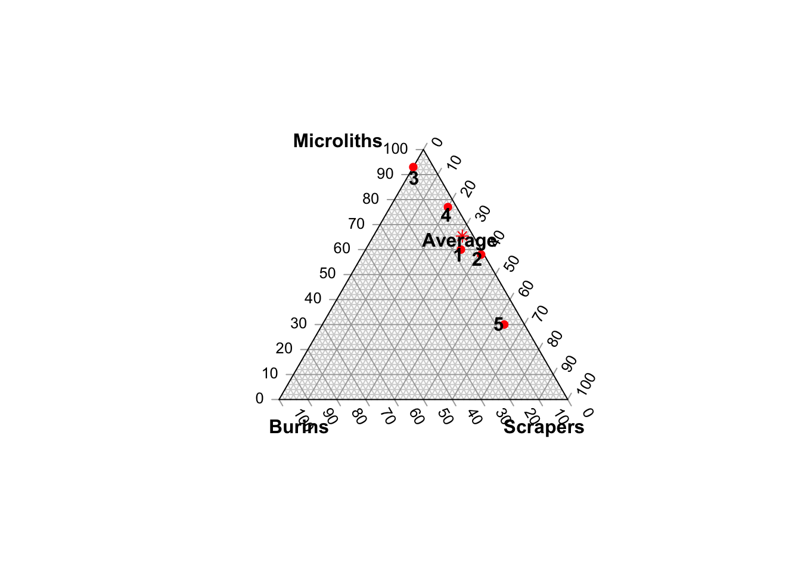
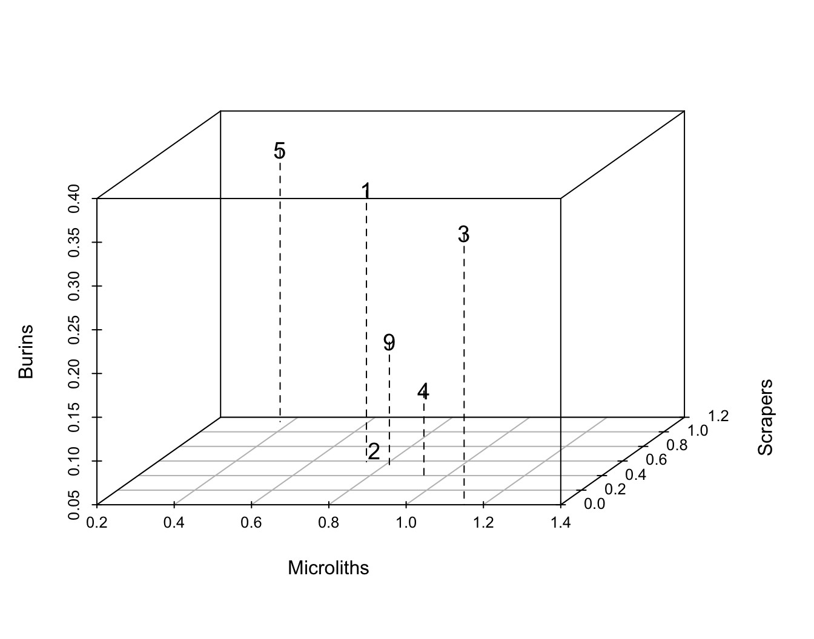
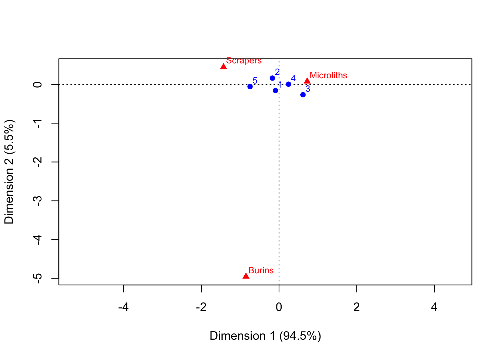
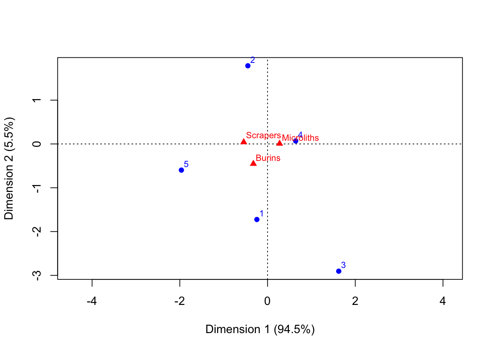
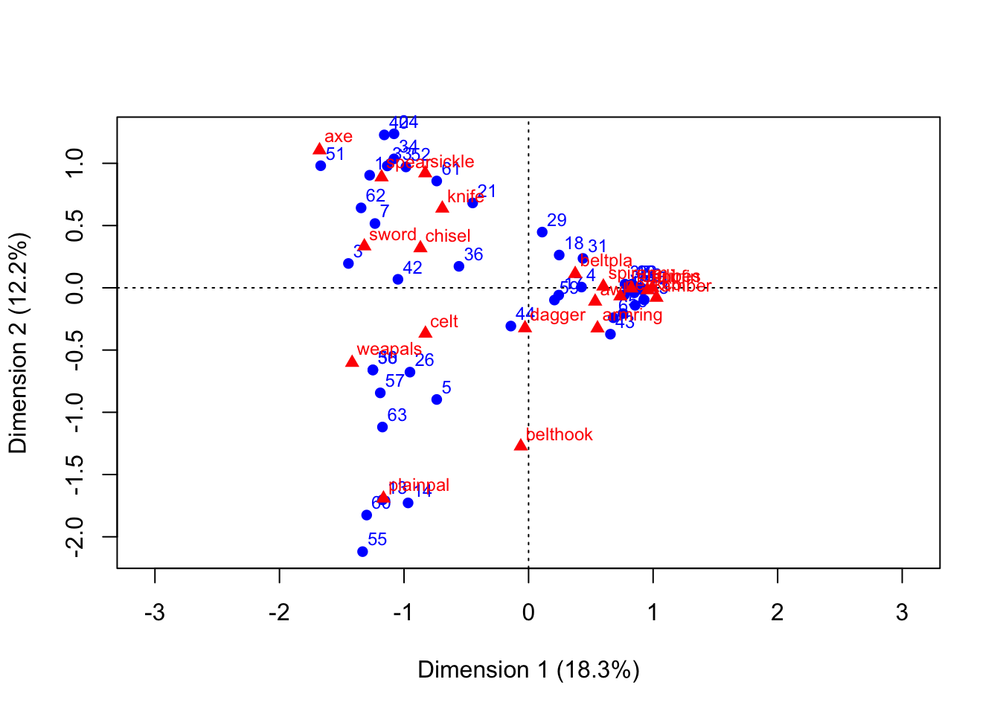

24 Correspondence Analysis
Drennan does not cover correspondence analysis, but because archaeologists are so likely to work with categorical data, it’s useful to be familiar with this method. This section is based on Ch.13 of Shennan’s Quantifying Archaeology (Shennan (1997)).
PCA and MDS give us tools for considering multivariate data in all their glory - but based as they are on correlations between measurement variables, these tools are less than ideal for categorical variables or presence/absence variables.
Recall that archaeologists love to classify things…producing lots of variables that consist of counts (“abundance data”) and presence/absence observations (“incidence data”).
Enter Correspondence Analysis, which is analogous to PCA in examining the relationships between variables based on the cases/observations/rows available.
Shennan provides a stripped down example (Table 13.1) to illustrate the logic.
Table13.1 <- read.csv("data/ShennanCh13_Table1.csv", header=T)
kable(Table13.1) %>% kable_classic %>%
kable_styling(full_width = F, position = "float_right")| Assemblage | Microliths | Scrapers | Burins | Total |
|---|---|---|---|---|
| 1 | 68 | 37 | 8 | 113 |
| 2 | 136 | 95 | 3 | 234 |
| 3 | 41 | 0 | 3 | 44 |
| 4 | 690 | 181 | 26 | 897 |
| 5 | 78 | 165 | 19 | 262 |
| Total | 1013 | 478 | 59 | 1550 |
If we want to compare assemblages to one another when they vary so much in size, it obviously makes a lot more sense to consider proportions - looking, as we have before, at both row and column proportions for different things. Shennan does this in Table 13.2; we can reproduce that, experimenting with vegan::decostand as an alternative to addmargins.
Table13.2 <- round(decostand(Table13.1[1:5,2:4], method="total", MARGIN = 1),
2) #row percents
Table13.2 <- rbind(Table13.2, round(decostand(Table13.1[6,2:4], method="total",
MARGIN = 1), 3))
rownames(Table13.2)[6] <- "Average"
kable(Table13.2) %>% kable_minimal() %>%
kable_styling(full_width = F, position = "float_right")| Microliths | Scrapers | Burins | |
|---|---|---|---|
| 1 | 0.600 | 0.330 | 0.070 |
| 2 | 0.580 | 0.410 | 0.010 |
| 3 | 0.930 | 0.000 | 0.070 |
| 4 | 0.770 | 0.200 | 0.030 |
| 5 | 0.300 | 0.630 | 0.070 |
| Average | 0.654 | 0.308 | 0.038 |
CA hinges on something that is camouflaged in a table of proportions: the ‘average’ proportion in this table is not the mean of all the proportions. That is, the ‘Average’ row we’ve added at the bottom of Table 13.2 is not the mean of that column. Try it:
## Microliths Scrapers Burins
## 0.636 0.314 0.050The results aren’t wildly different, but they are different. The distinction is in whether each row should contribute equally to our assessment of the “average” lithic assemblage. Contrast, for instance, Assemblages 3 and 4:
kable(Table13.1[3:4,]) %>% kable_classic() %>%
kable_styling(full_width = F, position = "float_left")| Assemblage | Microliths | Scrapers | Burins | Total | |
|---|---|---|---|---|---|
| 3 | 3 | 41 | 0 | 3 | 44 |
| 4 | 4 | 690 | 181 | 26 | 897 |
If we are thinking of each assemblage as telling us something about lithic assemblages in general, then the 897 lithics from Assemblage 4 are surely telling us more than the 44 lithics from Assemblage 3.
As a result, we want to account for the size of each assemblage in considering its contribution to the overall average. We could calculate average column proportions that match those of Table 13.2 by using the table totals:
## Assemblage Microliths Scrapers Burins Total
## 6 Total 1013 478 59 1550## [1] 0.6535484## Microliths Scrapers Burins
## 6 0.6535484 0.3083871 0.03806452We could also arrive at that number by weighting the proportion of each assemblage according to its size.
Consider the column proportions:
Table13.3 <- round(decostand(Table13.1[1:5,2:4], method="total", MARGIN = 2),
2) #col percents
Table13.3 <- cbind(Table13.3, round(decostand(Table13.1[1:5,5], method="total",
MARGIN = 2), 2))
colnames(Table13.3)[4] <- "Average"
kable(Table13.3) %>% kable_paper() %>%
kable_styling(full_width = F, position = "float_right")| Microliths | Scrapers | Burins | Average |
|---|---|---|---|
| 0.07 | 0.08 | 0.14 | 0.07 |
| 0.13 | 0.20 | 0.05 | 0.15 |
| 0.04 | 0.00 | 0.05 | 0.03 |
| 0.68 | 0.38 | 0.44 | 0.58 |
| 0.08 | 0.35 | 0.32 | 0.17 |
These - the contributions of each assemblage to the total (i.e., of all the lithics, 58% are in Assemblage 4, and only 3% in Assemblage 3) - tell us how much each proportion should count in considering the total. So, if we multiply the proportion of microliths in each assemblage by the proportion of each assemblage in the total, and sum those:
## Microliths Scrapers Burins
## 0.6545 0.3077 0.0378So? This tells us that overall microliths make up ~65% of lithic assemblages, scrapers ~31%, and burins ~4%.
Because we are characterizing assemblages using three variables, we can visualize this with a ternary plot, as Shennan does in Figure 13.1.
TernaryPlot(atip = "Microliths", btip = "Scrapers", ctip = "Burins")
TernaryPoints(Table13.2[,c("Microliths", "Scrapers", "Burins")],
cex = 1, col = "red", pch = c(rep(16,5), 8))
TernaryText(Table13.2[,c("Microliths", "Scrapers", "Burins")] + .025,
rownames(Table13.2), cex = 1, font = 2)
In weighting each proportion by the size of each assemblage, we are considering the mass of a row: how much influence should that row (or column, this can be transposed) have on our thinking about the whole?
Correspondence analysis draws on this concept of mass, and on another familiar concept: expected values. How different, we might ask, is any given assemblage from the average? A chi-square test, you’ll remember, calculates this by applying the average percents for each column to each row total, i.e., for the first assemblage:
## Microliths Scrapers Burins
## Average 73.902 34.804 4.294The simplest way to return these is just by running chisq.test() and using the expected values that are silently returned. This produces the values in parentheses in Shennan’s Table 13.4.
## Microliths Scrapers Burins Total
## [1,] 73.9 34.8 4.3 113
## [2,] 152.9 72.2 8.9 234
## [3,] 28.8 13.6 1.7 44
## [4,] 586.2 276.6 34.1 897
## [5,] 171.2 80.8 10.0 262
## [6,] 1013.0 478.0 59.0 1550We can also look at the chi-square results, which tell us that the table is not homogenous; it’s very unlikely that these assemblages came from comparable populations.
##
## Pearson's Chi-squared test
##
## data: Table13.1[1:5, 2:4]
## X-squared = 236.68, df = 8, p-value < 2.2e-16We can also use the chi-squared results to consider the difference of each row (or column) that we have from from the hypothetical ‘average’ row (or column). In fact the chi-squared statistic is derived by calculating this for each row and summing the results. If we divide that \(\chi^2\) statistic by the sample size (here \(236.68/1550\)), we get a measure of how much the observed values in aggregate depart from the expected values. We can calculate that individually for each row (“How far do the observed values in Assemblage 1 depart from the expected values?”). We can also, following the logic we used for proportions above, then weight the distances for each row by the mass of each row. That is, we can ask how much Assemblage 1 should matter in our consideration of the whole, and answer the question by considering what proportion of the total it makes up ( \(113/1550 = .07\) is the answer). The sum of the masses for each row is the inertia of the table. The same can be done for columns!
The distance measures that we get - how far each row (or column) departs from the notional average - are the chi-squared distances, which are analogous to the Euclidean distances that we have used for comparing multivariate cases!
Since we only have three variables, we can transform these distances into Euclidean distances, and display them in three dimensions, as Shennan does in Figure 13.2.

Unfortunately, this only works because we have three variables to display, so only need three dimensions. With more variables, we run into the familiar problem of having brains that aren’t adequate for visualizing the multi-dimensional space that would be necessary.
Since upgrading those brains is probably a pipe dream, how can we reduce the dimensionality of these data? - With PCA we could rely on correlations between variables to define space and positions in it; now positions are defined by chi-squared distances. - As with PCA, however, we can think about the points as stretched out in certain dimensions, and we can fit lines through those dimensions. In CA, rather than that line accounting for variance, it accounts for inertia. If there is a particular direction in which the weighted distances of the points are large, then an axis in that direction will account for most of the inertia in the data. - In another familiar approach, we can measure the deviations of each point from that line, and use the squares of those deviations to find a line of best fit. Doing this successively produces a series of axes that are equivalent to the principal components in PCA.
Ideally, CA will find 2-3 such axes that account for most of the inertia in the data…
To actually do this, we begin by calculating the contribution of each cell to the overall inertia (Shennan eventually gets around to this in Table 13.6).
chidist <- chisq.test(Table13.1[1:5,2:4])$residuals^2 #chi-squared distances ^2
chidist_table <- addmargins(chidist) #row/column sum matches chi-squared statistic
cell_inertia <- round(chidist_table/sum(chidist)*100,1)
kable(cell_inertia) %>% kable_paper() %>%
kable_styling(full_width = F, position = "float_right")| Microliths | Scrapers | Burins | Sum | |
|---|---|---|---|---|
| 1 | 0.2 | 0.1 | 1.3 | 1.6 |
| 2 | 0.8 | 3.1 | 1.7 | 5.5 |
| 3 | 2.2 | 5.7 | 0.4 | 8.4 |
| 4 | 7.8 | 14.0 | 0.8 | 22.5 |
| 5 | 21.4 | 37.1 | 3.5 | 62.0 |
| Sum | 32.4 | 59.9 | 7.7 | 100.0 |
This table gives the contributions of each cell, row, and column to the total inertia (i.e., departure from the expected values). It’s clear that Assemblage 5 has a much larger contribution than the other assemblages, and that scrapers contribute much more than the other types (in fact burins barely contribute at all). Why these differences? Relative size of assemblage (or type) + magnitude of departure from expected.
Total inertia and contributions to inertia form the basis for CA, which R will deliver using the ca() function from the ca package (among other ways).
This table summarizes how well the CA axes account for each row and column (Shennan illustrates something similar in Table 13.7). It’s anchored in now-familiar numbers:
- Mass is the contribution to inertia of each row and column, but out of 1000 rather than out of 100 (i.e., the row/column total divided by the entire sample size).
- inr is the distance of each row/column from the average, weighted by its mass as we just calculated above.
- The qlt column is a measure of how much of the row and column variation can be described with the number of axes calculated (here two, which between them account for all the variation - so all the scores are 1000).
- The k columns give the coordinates of the rows and columns on the two principal axes.
- The ctr and cor columns associated with each k value tell us:
- how much of the inertia in a row/column is accounted for by that axis (cor)
- what proportion of the inertia accounted for by that axis is provided by that row/column (ctr)
This starts to seem a lot more useful when examined graphically (and more useful yet as the numbers of variables multiply). We can produce a close analogue of Shennan’s Figure 13.6, which plots the assemblages relative to the main dimensions of variation. Note that our plot is rotated 180º relative to Shennan’s, but if you examine where the assemblages plot relative to the variables, you’ll see the same pattern - assemblages basically vary along a microliths-scrapers axis, with burins having little influence.

We can also - as Shennan does in Fig. 13.7 - look instead at where the lithic types plot in a space defined by the assemblages.

Or - Shennan’s Fig. 13.8 - we can in effect overlay the spaces of these two plots by producing a symmetric scattergram (note Shennan’s cautions about interpreting this space, pp.323-324).

24.1 An Archaeological Case Study: Danish Bronze Age Hoards
This starts to look a lot more interesting (and appealing) with datasets that are too big to grasp by simply eyeballing them. Shennan’s example is one of 63 Bronze Age hoards from Denmark.

As you can imagine, the resulting CA table has a lot going on.
There’s useful information there - to be discussed - but we’ll cut straight to generating the resulting plots.
